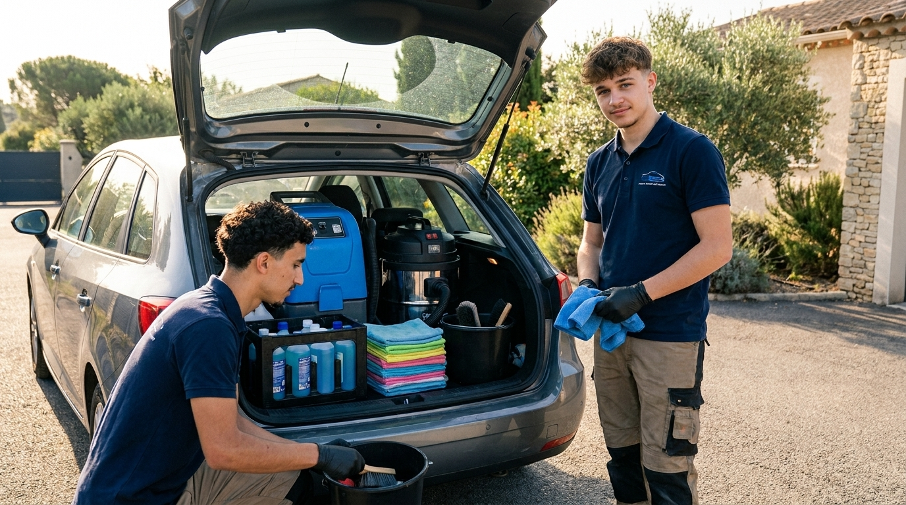

Propre ou Rien Auto, c'est un service de nettoyage auto intérieur à domicile, lancé par Nathan Bros et son associé Florian Basta à Cournonsec (34660), dans l'Hérault.
On a décidé de se lancer dans ce qui nous tient vraiment à cœur : le nettoyage automobile intérieur. Le grand frère de Nathan, Arnaud, est entrepreneur dans le digital — ça nous a toujours donné envie de construire quelque chose nous aussi.
Au lieu de bosser pour quelqu'un, on a décidé de bosser pour nous — et pour ceux qui, comme toi, veulent une voiture propre dedans sans y passer une demi-journée.
On n'est pas encore des vétérans. Mais on est passionnés, on se forme tous les jours, et on met autant d'énergie dans la Clio de Monsieur Dupont que dans n'importe quelle voiture.
Nathan gère le contact client de A à Z : devis, planning, WhatsApp — seul interlocuteur du premier message à la fin de la prestation. Florian est son associé sur le terrain : il fait équipe avec lui sur les prestations.

Lavent vite, mal, et seulement l'extérieur. Brosses qui rayent, zéro attention au détail.
Pour les Porsche et les collectionneurs. Pas pour ta Clio familiale.
Du boulot sérieux, à prix accessible, pour les voitures de tous les jours.
Deux jeunes du coin, formés au métier, qui mettent la même rigueur sur ta voiture que sur la leur.
Pas de studio, pas de mise en scène. On vient chez toi, on fait le job, on te montre le résultat avant de partir.
Aujourd'hui, je ne fais que l'intérieur. Parce que je préfère être bon à ça que moyen à tout. L'extérieur arrivera quand je serai prêt.
Pas de local, pas d'atelier. Je me déplace chez toi, à ton boulot, sur ton parking. Tu fais ta journée, moi je fais ta voiture.
Tu m'envoies 3 photos sur WhatsApp. Je regarde. Je te dis le prix. Tu valides ou pas. Zéro embrouille.
On arrive avec tout le matériel, mais il faut une prise électrique accessible et un point d'eau à proximité. C'est la seule contrainte.
Je te dis la vérité sur ce que j'utilise :
Je ne suis pas encore équipé pour l'extérieur. Je préfère être honnête plutôt que te vendre du vent.
Nathan est ton interlocuteur unique : devis WhatsApp, planning, prestation, suivi.
Florian est l'associé terrain : il fait équipe avec Nathan sur les chantiers exigeants ou quand il y a plusieurs voitures dans la journée.
Côté digital, Arnaud (grand frère de Nathan, entrepreneur web) soutient sur le site, les réseaux et la stratégie — pour que Nathan et Florian se concentrent sur le métier.
Côté client : un seul interlocuteur, Nathan, du premier message à la fin de la prestation.
Secteur proche (Cournonsec / Montpellier ouest) : déplacement inclus.
Au-delà : sur devis selon distance.
Limite réaliste : environ 1 h de route depuis Cournonsec.
Pas avoir assez de clients pour faire tourner la boîte. C'est honnête, c'est la peur de tout entrepreneur qui démarre.
Du coup, on met le paquet pour que chaque client reparte content, en parle autour, et revienne.
Nettoyer 3 voitures par jour, tous les clients contents. Construire une marque locale reconnue dans l'Hérault. Structurer la boîte à deux, faire évoluer l'offre (extérieur, phares, etc.).
Et surtout : vivre de notre passion. Tout simplement.
Si tu nous fais confiance, tu nous aides à faire ça. Et nous, on te rend une voiture que tu adoreras retrouver le matin.
💬 Nous confier ma voiture— Nathan & Florian